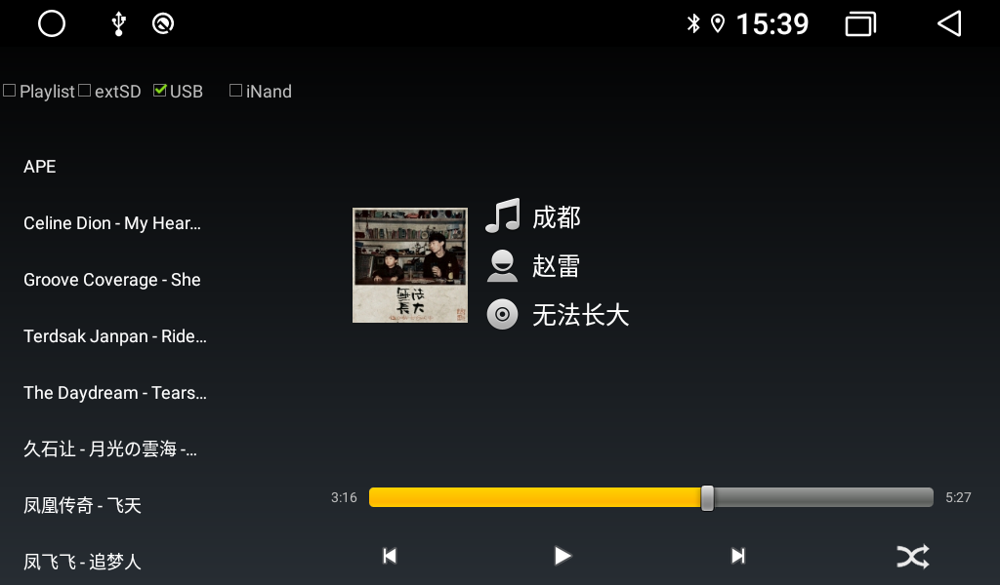
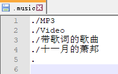
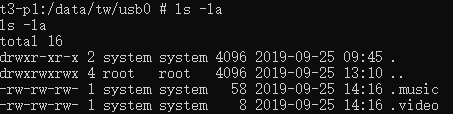
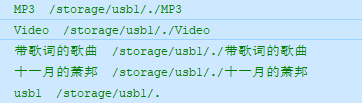
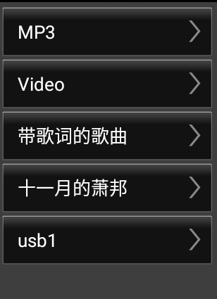
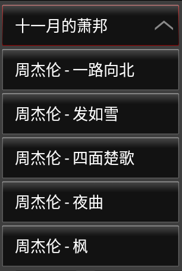

一.代码位置
二.效果图

三.流程
3.1 开机底层服务自动扫描硬盘
TWService扫描
当机器的硬盘挂载完成后，就可以进行一些指定目录的扫描，Intent.ACTION_MEDIA_MOUNTED是外接设备就绪/插入的广播提示。1
2
3
4
5
6
7
8
9
10
11
12
if(new File("/mnt/sdcard").canRead()) sendMedia(Intent.ACTION_MEDIA_MOUNTED, "file:///mnt/sdcard");
if(new File("/storage/extsd0").canRead()) sendMedia(Intent.ACTION_MEDIA_MOUNTED, "file:///storage/extsd0");
if(new File("/storage/extsd1").canRead()) sendMedia(Intent.ACTION_MEDIA_MOUNTED, "file:///storage/extsd1");
if(new File("/storage/usb0").canRead()) sendMedia(Intent.ACTION_MEDIA_MOUNTED, "file:///storage/usb0");
if(new File("/storage/usb1").canRead()) sendMedia(Intent.ACTION_MEDIA_MOUNTED, "file:///storage/usb1");
if(new File("/storage/usb2").canRead()) sendMedia(Intent.ACTION_MEDIA_MOUNTED, "file:///storage/usb2");
if (intent.getAction().equals(Intent.ACTION_MEDIA_MOUNTED)) {
String path = intent.getData().getPath();
...
new MediaScan().scanMedia(path);MediaScan
1
2
3
4
5
6
7
8
9
10
11
12
13
14
15
16
17
18
19
20
21
22
23
24
25
26
27
28
29
30
31
32
33
34
35
36
37
38
39
40
41
42
43
44
45
46
47
48
49
50
51
52
53
54
55
56
57
58
59
60
61
62
63
64
65
66
67
68
69
70
71
72
73
74
75
76
77
78
79
80
81
82
83
84
85
86
87
88
89
90
91
92
93
94
95
96
97
98
99
100
101
102
103
104
105
106
107
108
109
110
111
112
113
114
115
116
117
118
119
120
121
122
123
124
125
126
127
128
129
130
131
132
133
134
135
136
137
138
139
140
141
142
143
144
145
146
147
148
149
150
151
152
153
154
155
156
157
158
159
160
161
162
163
164
165
166
167
168
169
170
171
172
173
174public class MediaScan {
private final ArrayList<String> video = new ArrayList<String>();
private final ArrayList<String> music = new ArrayList<String>();
private void scanPath(String volume, String path) {
File file = new File(volume + "/" + path);
if (file.isDirectory()) {
if (!new File(file, ".nomedia").exists()) {
File[] files = file.listFiles();
if(files != null) {
boolean isVideo = false;
boolean isMusic = false;
for (File f : files) {
if (f.canRead()) {
String n = f.getName().toUpperCase(Locale.ENGLISH);
if (!n.startsWith(".")) {
if (f.isDirectory()) {
if(!(n.startsWith("PROGRAM") ||
n.startsWith("SYSTEM") ||
n.startsWith("IGO") ||
n.equals("SYGIC") ||
n.equals("AURA") ||
n.equals("PAPAGO") ||
n.equals("TOMTOM") ||
n.equals("$RECYCLE.BIN") ||
n.equals("WINDOWS") ||
n.equals("BOOT") ||
n.equals("LOST.DIR") ||
n.equals("DCIM") ||
n.contains("NAVI"))) {
scanPath(volume, path + "/" + f.getName());
}
} else {
if (!isVideo) {
if (n.endsWith(".AVI") ||
n.endsWith(".ASF") ||
n.endsWith(".WMV") ||
n.endsWith(".M2T") ||
n.endsWith(".MTS") ||
n.endsWith(".TS") ||
n.endsWith(".MPG") ||
n.endsWith(".M2P") ||
n.endsWith(".MP4") ||
n.endsWith(".FLV") ||
n.endsWith(".SWF") ||
n.endsWith(".VOB") ||
n.endsWith(".MKV") ||
n.endsWith(".DIVX") ||
n.endsWith(".XVID") ||
n.endsWith(".MOV") ||
n.endsWith(".RMVB") ||
n.endsWith(".RV") ||
n.endsWith(".3GP") ||
n.endsWith(".PMP") ||
n.endsWith(".TP") ||
n.endsWith(".TRP") ||
n.endsWith(".RM") ||
n.endsWith(".WEBM") ||
n.endsWith(".M2TS") ||
n.endsWith(".SSIF") ||
n.endsWith(".MPEG") ||
n.endsWith(".MPE") ||
n.endsWith(".M3U8") ||
n.endsWith(".M4V") ||
n.endsWith(".3G2") ||
n.endsWith(".F4V") ||
n.endsWith(".3GPP")) {
isVideo = true;
}
}
if(!isMusic) {
if (n.endsWith(".MP3") ||
n.endsWith(".WMA") ||
n.endsWith(".AAC") ||
n.endsWith(".OGG") ||
n.endsWith(".PCM") ||
n.endsWith(".M4A") ||
n.endsWith(".AC3") ||
n.endsWith(".EC3") ||
n.endsWith(".DTSHD") ||
n.endsWith(".MKA") ||
n.endsWith(".RA") ||
n.endsWith(".WAV") ||
n.endsWith(".CD") ||
n.endsWith(".AMR") ||
n.endsWith(".MP2") ||
n.endsWith(".APE") ||
n.endsWith(".DTS") ||
n.endsWith(".FLAC") ||
n.endsWith(".MIDI") ||
n.endsWith(".MID") ||
n.endsWith(".MPC") ||
n.endsWith(".TTA") ||
n.endsWith(".ASX") ||
n.endsWith(".AIFF") ||
n.endsWith(".AU")) {
isMusic = true;
}
}
}
}
}
}
if (isVideo) {
video.add(path);
}
if (isMusic) {
Log.i("md", "增加路径 "+path);
music.add(path);
}
}
}
}
}
public void scanMedia(String volume) {
Log.i("md", "scanMedia " + volume);
String path = null;
video.clear();
music.clear();
try {
scanPath(volume, ".");
if(volume.startsWith("/storage/usb") || volume.startsWith("/storage/extsd")) {
path = "/data/tw/" + volume.substring(9);
} else {
path = volume + "/DCIM";
}
new File(path).mkdir();
FileUtils.setPermissions(path, 0755, -1, -1);
} catch (Exception e) {
}
try {
BufferedWriter bw = null;
try {
bw = new BufferedWriter(new FileWriter(path + "/.video"));
for (String v : video) {
bw.write(v);
bw.write('\n');
}
bw.flush();
} catch (Exception e) {
new File(path + "/.video").delete();
} finally {
if(bw != null) {
bw.close();
bw = null;
}
}
FileUtils.setPermissions(path + "/.video", 0666, -1, -1);
} catch (Exception e) {
}
video.clear();
try {
BufferedWriter bw = null;
try {
bw = new BufferedWriter(new FileWriter(path + "/.music"));
for (String v : music) {
bw.write(v);
bw.write('\n');
}
bw.flush();
} catch (Exception e) {
new File(path + "/.music").delete();
} finally {
if(bw != null) {
bw.close();
bw = null;
}
}
FileUtils.setPermissions(path + "/.music", 0666, -1, -1);
} catch (Exception e) {
}
music.clear();
}
}最终生成的文件是对应音乐视频文件的.Music文件

文件在对应data/tw/对应设备目录，我的设备是usb0

3.2 音乐启动时加载资源目录
MusicActivity启动时候对底层服务生产的.Music文件进行读取
1
2
3
4
5
6
7
8
9
10
11
12
13
14
15
16
17
18
19
20private void initRecord() {
...
mUSBRecord = new Record("USB", 2, 0);
File[] fileUSB = new File("/storage").listFiles(new FileFilter() {
@Override
public boolean accept(File f) {
String n = f.getName();
if(f.canRead() && f.isDirectory() && n.startsWith("usb")) {
return true;
}
return false;
}
});
if(fileUSB != null) {
for(File f : fileUSB) {
addRecordUSB(f.getAbsolutePath());
}
}
...
}有的话进addRecordUSB（路径）,新建一个Record实例对象，通过loadvolume方法扫描后添加到USB的record集合，
1
2
3
4
5
6
7private void addRecordUSB(String path) {
...
Record r = new Record(path, 2, 0);
loadVolume(r, path);
mUSBRecordArrayList.add(r);
...
}
Record中有保存如下信息1
2
3
4
5
6...
String mName //打开某个目录时，记录的目录名称
int mLevel; //列表的打开关闭状态 0：显示列表目录状态 1：点击了某个列表后显示“列表+文件目录”的状态
LName[] mLName; //目录名 目录路径集合 最关键的东西
public int mCLength; //歌曲的数量
...
- 通过loadVolume解析.music文件，拿到目录名字和目录路径
1
2
3
4
5
6
7
8
9
10
11
12
13
14
15
16
17
18
19
20
21
22
23
24
25
26
27
28
29
30
31
32
33
34
35
36
37
38
39
40
41
42
43
44
45private void loadVolume(Record record, String volume) {
if ((record != null) && (volume != null)) {
try {
BufferedReader br = null;
try {
String xpath = null;
if(volume.startsWith("/storage/usb") || volume.startsWith("/storage/extsd")) {
xpath = "/data/tw/" + volume.substring(9);
} else {
xpath = volume + "/DCIM";
}
br = new BufferedReader(new FileReader(xpath + "/.music"));
String path = null;
ArrayList<LName> l = new ArrayList<LName>();
while((path = br.readLine()) != null) {
File f = new File(volume + "/" + path);
if (f.canRead() && f.isDirectory()) {
String n = f.getName();
String p = f.getAbsolutePath();
if(n.equals(".")) {
String p2 = p.substring(0, p.lastIndexOf("/"));
String p3 = p2.substring(p2.lastIndexOf("/") + 1);
l.add(new LName(p3, p));
} else {
l.add(new LName(n, p));
}
}
}
record.setLength(l.size());
for(LName n : l) {
record.add(n);
Log.i("md", n.mName+" "+n.mPath+" ");
}
l.clear();
} catch (Exception e) {
} finally {
if(br != null) {
br.close();
br = null;
}
}
} catch (Exception e) {
}
}
}
打印的地方是最终解析出来的文件名+路径

这些都存在于mSDRecordArrayList中，多个外接设备就集合中就有多个Record
3.3 U盘热拔插加载列表逻辑
当设置在运行状态进行U盘热拔插时，底层服务会受到Intent.ACTION_MEDIA_MOUNTED和Intent.ACTION_MEDIA_UNMOUNTED，直接会通知应用。
- 拔应用中接收处理
1
2
3
4
5
6
7
8
9
10if (intent.getAction().equals(Intent.ACTION_MEDIA_UNMOUNTED)) {
String path = intent.getData().getPath();
if(path.equals("/mnt/sdcard")) {
mTW.write(0x9e1f, 3, 0);
} else if(path.startsWith("/storage/extsd")) {
mTW.write(0x9e1f, 1, 0, path.substring(9));
} else if(path.startsWith("/storage/usb")) {
mTW.write(0x9e1f, 2, 0, path.substring(9));
}
}应用会根据当前把出的设备名称，对对应的Record集合进行移除，然后更新列表1
2
3
4
5
6
7
8
9
10
11
12
13
14
15
16
17
18
19
20
21
22
23
24
25
26
27
28
29
30case TWMusic.RETURN_MOUNT: {//u盘拔插通知
String volume = null;
switch(msg.arg1) {
case 1:
volume = "/storage/" + msg.obj;
if(msg.arg2 == 0) {
removeRecordSD(volume);
} else {
addRecordSD(volume);
}
showTRText(R.id.sd);
break;
case 2:
volume = "/storage/" + msg.obj;
if(msg.arg2 == 0) {
removeRecordUSB(volume);
} else {
addRecordUSB(volume);
}
showTRText(R.id.usb);
break;
case 3:
volume = "/mnt/sdcard/iNand";
if(msg.arg2 == 0) {
mMediaRecord.clearRecord();
} else {
loadVolume(mMediaRecord, volume);
}
break;
} - 插
U盘插入的话，底层服务就会继续走自动扫描逻辑，然后扫描完成后通知应用更新读取。
3.4音乐列表显示与点击
- 每个音乐都至少有一个音乐列表目录，以TW2为例点击对应外接设备类型，列表就会去加载对应的Record,我们程序里是用mCList拉皮条
1
2
3
4mPlaylistRecord
mSDRecordArrayList[position]
mUSBRecordArrayList[position]
mMediaRecord - adapter附图1：
1
2
3
4
5
6
7
8
9
10
11
12
13
14
15
16
17
18
19
20
21
22
23
24
25
26
27
28
29
30
31private class MyListAdapter extends BaseAdapter {
...
@Override
public int getCount() {
if(mCList == null) {
return 0;
} else if(mCList.mLevel == 0) { //显示的是目录列表状态 如附图1
return mCList.mCLength;
} else {
return mCList.mCLength + 1; //显示的是“目录+目录文件”状态，如附图2，音乐多了个目录item，所以长度要+1
}
}
...
private void bindView(View v, int position, ViewGroup parent) {
ViewHolder vh = (ViewHolder) v.getTag();
String name, path;
if(mCList.mLevel == 0) { //显示的是目录列表状态时候，name和path老老实实加载
name = mCList.mLName[position].mName;
path = mCList.mLName[position].mPath;
} else if(position == 0) {//显示的是“目录+目录文件”状态 第一个item显示的是保存的打开目录名称
name = mCList.mName;
path = null;
} else {//显示的是“目录+目录文件”状态 name和path的position-1加载
name = mCList.mLName[position - 1].mName;
path = mCList.mLName[position - 1].mPath;
}
vh.line.setText(name);
...
}
private Context mContext;
}

附图2：
 - 点击列表时发生了什么
1
2
3
4
5
6
7
8
9
10
11
12
13
14
15
16
17
18
19
20
21
22
23
24
25
26
27
28
29
30
31
32
33
34
35mList.setOnItemClickListener(new OnItemClickListener() {
@Override
public void onItemClick(AdapterView<?> parent, View view,
int position, long id) {
if((mCList.mLevel != 0) && (position == 0)){//附图2状态 点击了第一个item，就是目录名称 ，收回到全目录列表状态
mCList = mCList.mPrev; //加载上一个Record列表
} else {
if(mCList.mLevel != 0) {
position--;
}
if((mCList.mLevel == 0) && (mCList.mIndex != 0)) {//附图1状态 点击了目录列表 摊开目录的歌曲
Record r = mCList.getNext(position);
if(r == null) {
r = new Record(mCList.mLName[position].mName, position, mCList.mLevel + 1, mCList);
mTW.loadFile(r, mCList.mLName[position].mPath);
}
mCList.setNext(r);
mCList = r;
} else {//附图2状态 点击了歌曲 播放
mTW.mCurrentIndex = position;
mTW.mCurrentAPath = mCList.mLName[position].mPath;
String path = mTW.mCurrentAPath.substring(0, mTW.mCurrentAPath.lastIndexOf("/"));
if((path != null) && !path.equals(mTW.mCurrentPath)) {
if(mCList.mLevel == 1) {
mTW.mPlaylistRecord.copyLName(mCList);
}
}
mTW.toRPlaylist(position);
mTW.mCurrentPath = path;
current(0, false);
}
}
mAdapter.notifyDataSetChanged();
}
});

...
...
00:00
00:00